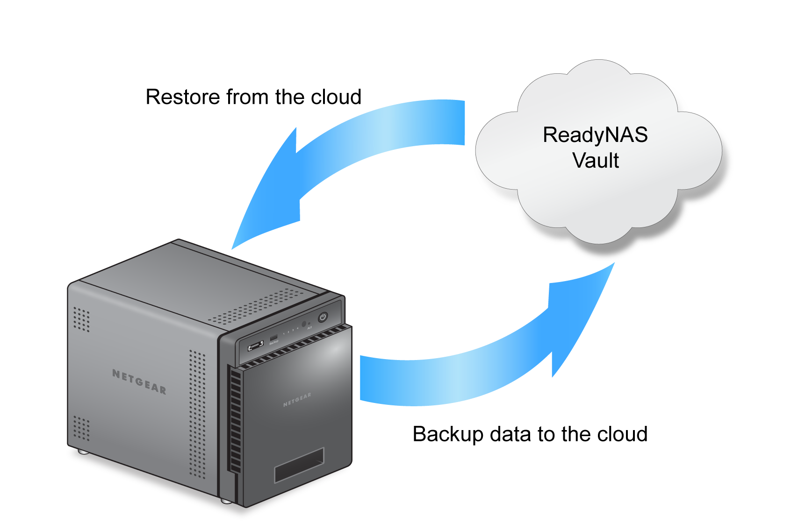

With ReadyNAS Vault, your ReadyNAS data can be backed up securely to a remote
secure data center. Your data is encrypted before it is sent over the Internet. Backup
administration is over a 128-bit SSL connection, the same method that banks and financial
institutions use.
The following figure illustrates two concepts: backing up data from a ReadyNAS
system to the cloud and restoring backed-up data to a ReadyNAS system from the cloud.
Figure 1. Using a ReadyNAS system to back up and recover data stored on a
cloud

To set up ReadyNAS Vault on your system:
- Log in to your ReadyNAS.
- Select Cloud.
- Set the ReadyNAS Vault On-Off slider so that the
slider shows the On position.
The ReadyNAS Vault Settings window opens.
- From the Select Volume menu, select a volume where temporary data from ReadyNAS Vault can
be stored.
- Enter your ReadyNAS Vault account credentials and click the Login
button.
Note: If you do not own an account yet, click the Click here
to register link to set one up. You can use the same ReadyNAS Vault account for all
of your ReadyNAS systems.
The Manage ReadyNAS Vault button
displays.
- Click the Manage ReadyNAS Vault button.
A setup
wizard launches in a new browser window to help you configure ReadyNAS Vault backups for your
ReadyNAS system.
Note: After initial setup, you can change your ReadyNAS
Vault backup settings at any time by clicking the Manage ReadyNAS Vault
button.
- Follow the instructions of the ReadyNAS Vault setup wizard.
For more information about how to use ReadyNAS Vault, visit readynasvault.com.